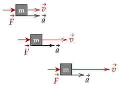
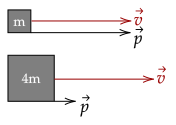

When Newton was writing his second Law of Motion, the Law of Acceleration, which we have used multiple times over, he wrote it not that a net force causes a change in an object's acceleration, but that a net force is the rate of change of an object's momentum.
Of course, the more common version, , is suitable for most of our problems. In fact, we solved an entire chapter based on its principle. However, to deal with problems involving collisions, we look back to his original definition.

We define momentum as the following.
Moving objects have momentum. For example, a person walking has momentum. It is often said that objects with more momentum are harder to stop. For example, a moving boulder is much harder to stop than a snowball.
This gives us two things which momentum is based off of; the velocity of the object, and the mass of the object. Recall that mass is a measure of inertia of an object; this aligns with what we know.
This equation gives us the numerical value for momentum, which is the product of mass and the velocity. Looking at the units, we have the following.
Unlike force which has the Newton, which is , momentum doesn't have a specific unit.
Exercise 1
(HRK E6.1a) How fast must an 816-kg Volkswagen travel to have the same momentum as a 2650-kg Cadillac going 16.0 km/h?
Solution
We first convert the km/h to m/s.
We need the velocity of the Volkswagen, and we know it is equal to the momentum of the Cadillac, so we set up the following equation. We use the subscript "V" and "C" for the two cars respectively.
We then substitute our values.
Exercise 2
(LSM P9.24) What is the average momentum of a 70.0-kg sprinter who runs the 100-m dash in 9.65 s?
Solution
We first get the average velocity.
The average momentum is thus just the mass times the velocity of the runner.
Exercise 3
A 1.0kg rock is slung with a string in a radius of 1.0m, with a centripetal acceleration of 25m/s². What is the magnitude of its momentum?
Solution
We first get the speed of the object. Recall that we only need the magnitude, so we only need the speed.
This gives us the speed is 5.0m/s. Now, the momentum is quite simple.
Since we use velocity, momentum is also a vector. Momentum always points in the direction of where velocity points. For example, a ball going east has its momentum vector pointing towards east.

Further, since we use velocity, the reference frame is important to note. Usually, like before, we will choose to use a reference frame which is nearly stationary.
Problem 1
(LSM P9.83) Two 70-kg canoers paddle in a single, 50-kg canoe. Their paddling moves the canoe at 1.2 m/s with respect to the water, and the river they’re in flows at 4 m/s with respect to the land. What is their momentum with respect to the land?
Solution
We first get the velocity of the canoers with respect to the land. Setting up the equation, we have the following.
The momentum of the canoers is thus the two canoers' mass plus the mass of the canoe and their velocity.
We saw above the other way to write the Law of Acceleration. We can substitute our value for the momentum to have this equation.
This definition of the Law of Acceleration is useful in problems where the mass varies. However, if the mass doesn't vary, we can let it out of the equation. Recall that acceleration is the rate of change of velocity, and it goes back to our more well known way of writing the net force.